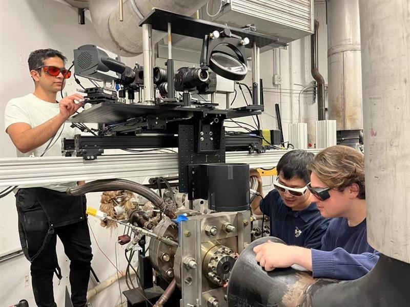
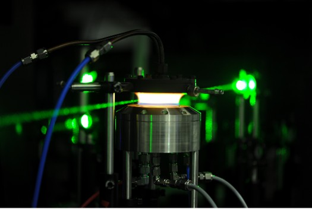
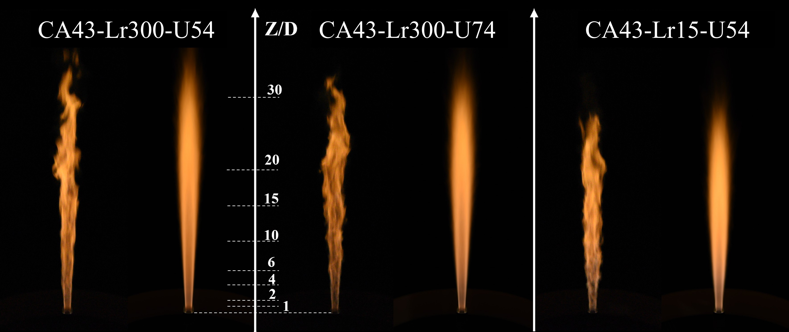
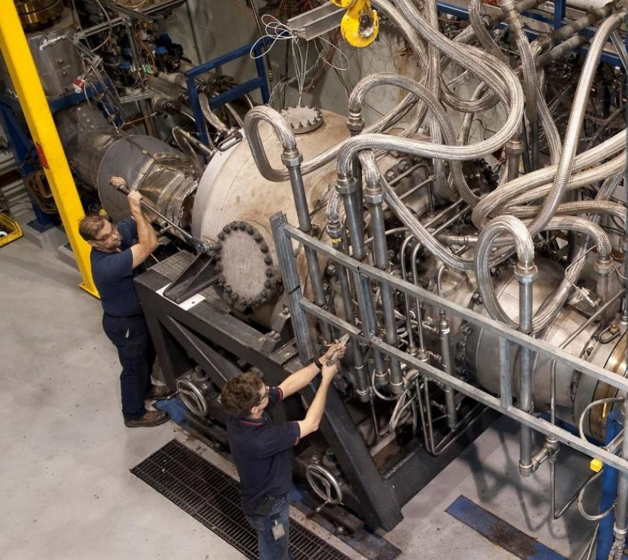

Research

Advanced Laser Diagnostics
Development and application of Raman, Rayleigh, PLIF, and related diagnostics for temperature and species measurements in turbulent reacting flows.

Low-Carbon Fuels
Fundamental and applied studies of ammonia, hydrogen, methane, and fuel blends for cleaner combustion and emissions reduction.

Turbulence-Chemistry Interaction
Investigation of how mixing, strain, and compositional inhomogeneity affect flame stabilization, flame length, and pollutant formation.

Gas-Turbine Combustion
Research on combustor-relevant flames, staged combustion, non-premixed and partially premixed systems, and pathways toward practical low-emission operation.
Selected Publications
You can duplicate these publication blocks and add all your papers, or simply link this section to your Google Scholar profile.
Teaching
Courses Taught
- Aerodynamics
- Combustion
- Fluid Mechanics
- Propulsion
Teaching Interests
- Combustion and reacting flows
- Thermodynamics
- Optical and laser diagnostics
- Energy systems
People and Opportunities
Current Group
Current PhD students, MSc students, undergraduate researchers, postdocs, and collaborators.
Open Positions
I am looking for motivated students interested in combustion, diagnostics, low-carbon fuels, and turbulent reacting flows. Please email your CV, transcripts, and a brief description of your research interests.
News
March 2026
Started as Assistant Professor at the University of Ottawa.
Recent Update
Two papers got accepted by ISOC 2026, held in Japan.
Contact
University of Ottawa
CBY 219